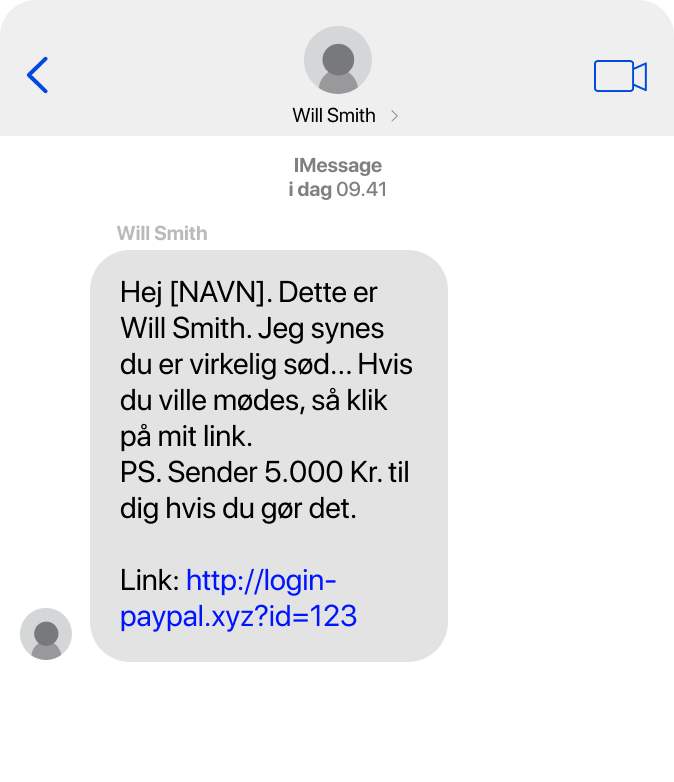
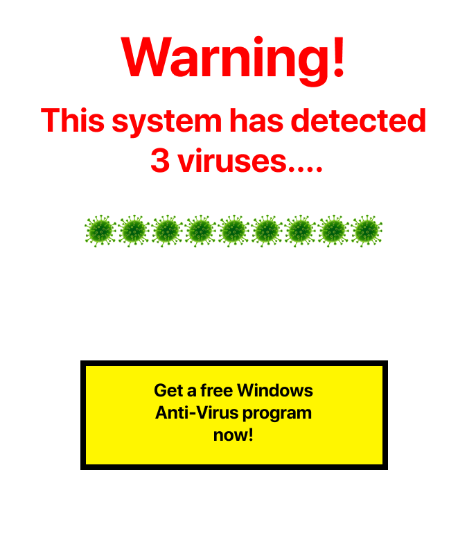
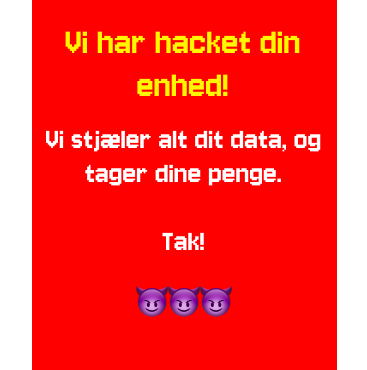
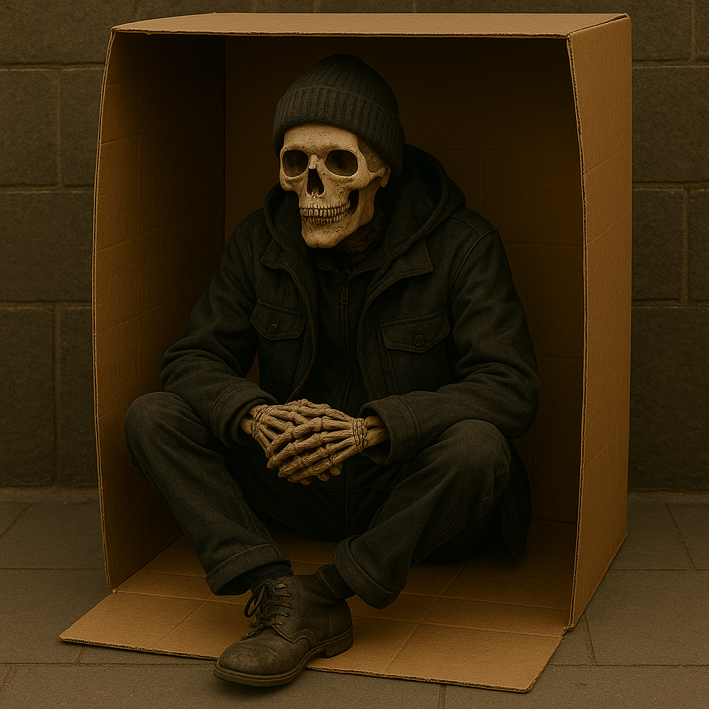

Jeg skal teste din viden, inden for cybersikkerhed. Dit mål er at skabe din online identitet, naviger i realistiske scenarier, og undgå at miste dine penge, og sørge for at holde dig sikker på nettet.
Jeg vil guide dig gennem din rejse, og give dig tips og tricks til at holde dig sikker online. Dine valg afgør din skæbne og din score, som jeg bedømmer, ud fra hvordan du klarer dig!
Er du klar til at begynde din rejse? Tryk på knappen nedenfor for at starte!
Først... Indtast gerne dit navn!
Indtast kaldenavn:
Vær ærlig ... Indtastede du dit eget navn?
Øh nej...
Vær forsigtig med infomation du giver ud!
Dit navn er en af de vigtigste personlige oplysninger, fordi det kan bruges til at bekræfte din identitet i fx bank- eller retslige sammenhænge.
Jeg ville aldrig gøre dig noget ondt mod dig! Men hvis en ondsindet person kombinerer dit navn med yderligere offentligt tilgængelige data (adresse, fødselsdato mv.), kan vedkommende begå identitetstyveri, og andre forfærdelige ting! Derudover kan offentlig deling af dit navn føre til privatlivskrænkelser som stalking eller chikane, og potentielle arbejdsgivere eller andre kan let kortlægge din familie, bopæl og arbejdsplads online.
Så ja... Det var ikke så godt at du gjorde det. Gerne lade vær med at gøre det på en daglig basis... Altid vær opmærksom om det!
Phew... Det var godt!
Vær forsigtig med infomation du giver ud!
Dit navn er en af de vigtigste personlige oplysninger, fordi det kan bruges til at bekræfte din identitet i fx bank- eller retslige sammenhænge.
Jeg ville aldrig gøre dig noget ondt mod dig! Men hvis en ondsindet person kombinerer dit navn med yderligere offentligt tilgængelige data (adresse, fødselsdato mv.), kan vedkommende begå identitetstyveri, og andre forfærdelige ting! Derudover kan offentlig deling af dit navn føre til privatlivskrænkelser som stalking eller chikane, og potentielle arbejdsgivere eller andre kan let kortlægge din familie, bopæl og arbejdsplads online.
Men det er godt du allerede virker til ikke at ville være villig til at dele alt dit data med mig!
Will Smith skrev til dig! Gad vide hvordan han fandt dig...

Hvordan ville du reagere?
Du har faktisk en hjerne!
Aldrig klik på mistænkelige links! ALDRIG!
Hvad du lige oplevet der, var noget der hedder Smishing! Det er en form for “Social Engineering”. De sendte dig en SMS, og prøvede at manipulere dig til at klikke på et link, så de kan få dine oplysninger og penge! Det værste er, at de ikke efterlader nogle spor af deres kriminalitet.
En person, der forsøger at udføre et "social engineering"-cyberangreb, kan ofte kendes på visse tydelige tegn. Det kan være uventede beskeder fra ukendte afsendere, hvor de anmoder om følsomme oplysninger eller presser på for hurtige handlinger. Ofte vil de lokke med tilbud, der virker for gode til at være sande, eller de vil bruge emotionelle appeller for at fremkalde panik eller medfølelse, hvilket får modtageren til at handle uden at tænke sig om.
Godt du dog vidste at det ikke var Will Smith... Er rimelig sikker på han heller ikke skriver dansk...
SLUT
Din konklusion:
Nogenlunde Sikker
Der er plads til forbedringer... Men ellers godt!
Du virker til at have en god forståelse for hvordan du skal være på nettet. Der er stadig plads til at du kan gøre nogle ting bedre, men spil det her igen, og du ville garanteret nå 100% sikkerhed næste gang!
Næste gang bør du tage nogle vigtige forholdsregler: Sørg for at lave stærkere adgangskoder, vær forsigtig med at dele personlige oplysninger, undgå altid at klikke på mistænkelige links, og sørg for at installere beskyttelse som VPN og antivirus for at sikre dine enheder bedst muligt.
Ville du prøve igen?
Nu du virkelig på spanden...
Aldrig klik på mistænkelige links! ALDRIG!
Hvad du lige oplevet der, var noget der hedder Smishing! Det er en form for “Social Engineering”. De sendte dig en SMS, og prøvede at manipulere dig til at klikke på et link, så de kan få dine oplysninger og penge! Det værste er, at de ikke efterlader nogle spor af deres kriminalitet.
En person, der forsøger at udføre et "social engineering"-cyberangreb, kan ofte kendes på visse tydelige tegn. Det kan være uventede beskeder fra ukendte afsendere, hvor de anmoder om følsomme oplysninger eller presser på for hurtige handlinger. Ofte vil de lokke med tilbud, der virker for gode til at være sande, eller de vil bruge emotionelle appeller for at fremkalde panik eller medfølelse, hvilket får modtageren til at handle uden at tænke sig om.
Så... Nu er nærmest alle dine penge væk... Gerningsmanden var dog sød at efterlade 20 kr. så du kan købe en Tasty Cheese.
SLUT
Din konklusion:
Hjemløs
Din rejse var kort og skræmmende... -100 aura.
Denne slutning er blevet besluttet ud af dine meget lave erfaringer med at beskytte dig selv på nettet. Eller din ulyst til det. Du er ligeglad med din adgangskoder, hvilken data du giver af dig selv ud på nettet, og genereltset... Stoler du på alle mennesker i verden.
Heldigvis er dette ikke virkelighed! Det kunne dog være hvis du ikke begynder at ændre nogle af dine vaner snart...
Næste gang bør du tage nogle vigtige forholdsregler: Sørg for at lave stærkere adgangskoder, vær forsigtig med at dele personlige oplysninger, undgå altid at klikke på mistænkelige links, og sørg for at installere beskyttelse som VPN og antivirus for at sikre dine enheder bedst muligt.
Ville du prøve igen?
Hov... Jeg fik vidst en pop-op... Må være en af mine ads...

Hvordan ville du reagere i sådan en situation?
Hvad laver du?!
Lad ikke pop-ops vinduer snyde dig!
Dette var endnu en strategi gennem “Social Engineering” der hedder “Scareware”, blandet med en smule “Phishing".
Gik det ind af det ene øre og ud af det andet? Enkeltsagt, kan disse former af angreb typisk forsøge at lokke dig til at handle ud fra frygt. Med mindre du ved at den pop-op kommer fra en program der har en masse af troværdighed, så ville du aldrig få sådan nogle pop-ops, hvor du skal handle på dem.
Til fremtidige formål er det vigtigt at være opmærksom på visse faresignaler. Hold øje med uventede beskeder fra ukendte afsendere, især hvis de indeholder anmodninger om følsomme oplysninger eller opfordringer til hurtig handling. Vær også skeptisk over for tilbud, der virker for gode til at være sande, samt beskeder med emotionelle appeller, som forsøger at skabe panik eller medfølelse.
For sent at sige for dig dog... Du har allerede sikret dig selv at blive hacket på et eller andet tidspunkt...
Wow! Se hvad jeg sagde...

SLUT
Din konklusion:

100% Fortabt
Du fik den værste slutning! Du kunne ikke gøre det værre!
Jeg ved du prøvede dit bedste... Du har måske faktisk klaret dig virkelig godt i andre ting. Så der er en chance for at du faktisk gør nogle ting rigtige. Men du har alligevel gjort nok dumme ting på internettet, at du stadig ender ud med at have ingen penge, ingen sikkerhed, og er blevet bestræbbet alt dit data fra dig. Dine forældre burde virkelig ikke have givet dig adgang til internettet.
Men vi alle sammen laver fejl. Vi har allesammen ret til at blive givet ekstra chancer. (Bortset fra faktiske kriminelle.) Så her er hvad du burde gøre næste gang:
Næste gang bør du tage nogle vigtige forholdsregler: Sørg for at lave stærkere adgangskoder, vær forsigtig med at dele personlige oplysninger, undgå altid at klikke på mistænkelige links, og sørg for at installere beskyttelse som VPN og antivirus for at sikre dine enheder bedst muligt.
Ville du prøve igen?
Gudskelov!
Lad ikke pop-ops vinduer snyde dig!
Dette var endnu en strategi gennem “Social Engineering” der hedder “Scareware”, blandet med en smule “Phishing”
Gik det ind af det ene øre og ud af det andet? Enkeltsagt, kan disse former af angreb typisk forsøge at lokke dig til at handle ud fra frygt. Med mindre du ved at den pop-op kommer fra en program der har en masse af troværdighed, så ville du aldrig få sådan nogle pop-ops, hvor du skal handle på dem.
Til fremtidige situationer er det vigtigt at være opmærksom på visse faresignaler. Vær særligt opmærksom på uventede beskeder fra ukendte afsendere, anmodninger om følsomme oplysninger eller pres for at handle hurtigt. Vær også skeptisk over for tilbud, der virker for gode til at være sande, samt emotionelle appeller, der forsøger at skabe panik eller vække medfølelse.
Jeg ville aldrig sende dig en virus dog! Og det virker til du har en forståelse for hvornår du skal og ikke skal reagere.
SLUT
Din konklusion:
100% Sikker!
Du fik den bedste slutning!
Jeg er så stolt af at du har fået 100% sikkerhed! Du har virkelig styr på hvordan du skal beskytte dig selv på internettet... Selvfølgelig er der andre ting at være opmærksomme på, som jeg muligvis ikke har dækket, men jeg er selvsikker i, at du faktisk ved hvad du laver på nettet!
Som en gevinst for at du har klaret det så godt, ville jeg give dig noget helt specielt... Klik på knappen for at hente din velfortjente belønning!